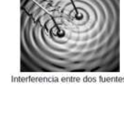
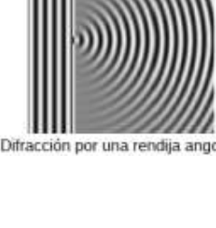
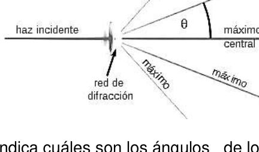
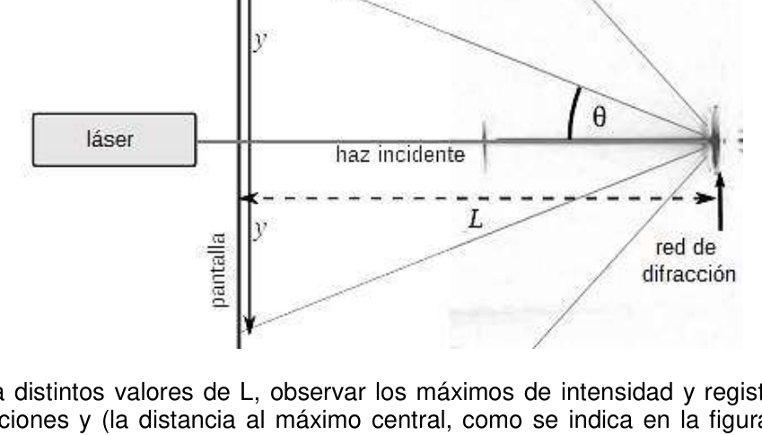

PE41. Escuela Superior de Comercio Carlos Pellegrini Escuela de Comercio N° 31 Naciones Unidas. Ciudad Autónoma de Buenos Aires.
Difracción en un disco compacto
Introducción La óptica geométrica es el modelo que explica la propagación de la luz pensándola como rayos que parten de fuentes luminosas y se propagan de forma rectilínea por el espacio y por medios materiales transparentes. Esta teoría fue muy exitosa pues logra explicar la formación de imágenes en objetos como lentes, telescopios e incluso el ojo humano. Sin embargo, a medida que pasó el tiempo se sumó evidencia experimental de comportamientos propagatorios de la luz que eran imposibles de explicar por un modelo de rayos. El más famoso es el experimento de las dos rendijas de Young (1803), que demuestra interferencia entre dos fuentes de luz. Los fenómenos que se habían empezado a estudiar fueron explicados con un nuevo modelo propuesto principalmente por Huygens y Fresnel que hoy llamamos óptica física: consiste en pensar la luz como ondas que se propagan de manera análoga a las que se pueden generar en un estanque de agua perturbando su superficie libre (ver figura izquierda).
OAF 2018 - 187 Además de la interferencia, uno de los fenómenos de la luz que explica la óptica física es la difracción (del latín diffringĕre, ‘hacerse añicos’). En términos elementales, la difracción consiste en el hecho de que las ondas tienden a “desparramarse” un poco alrededor de obstáculos opacos. Esto es algo imposible de explicar si se piensa la luz como rayos que se propagan de forma rectilínea. El primer caso paradigmático es cuando el obstáculo es una rendija muy angosta (ver figura derecha): allí se observa que el haz de luz que incide desde la izquierda “se desparrama” en todas direcciones al atravesar la rendija y en cada dirección lo hace con una intensidad distinta, lo que da lugar al llamado patrón de difracción. Otro ejemplo de difracción consiste en la llamada red de difracción por transmisión, que consiste en una serie de obstáculos equiespaciados (que pueden ser múltiples rendijas aunque no necesaria-mente). Su característica notable es que dan un patrón de difracción con franjas luminosas muy nítidas en ciertas direcciones, llamadas máximos de intensidad, como se ve en la figura.
La ecuación de la red indica cuáles son los ángulos de los máximos de intensidad:
𝑛 𝜆= 𝑑 𝑠𝑖𝑛 𝜃
(1)
donde d es la distancia entre los obstáculos de la red y n es un número entero (0,1,2…) y λ es la longitud de onda del haz. Para cada valor de n hay un máximo de intensidad y n se llama el orden del máximo. El máximo central es de orden cero, los primeros que aparecen a sus lados son de orden 1, etcétera. Por otro lado, la longitud de onda se relaciona con el color de la luz. El espectro visible por el ojo humano consiste en la luz que tiene longitudes de onda aproximadamente entre los 400 nm (azul) y los 700 nm (rojo). Así, de acuerdo con la ecuación (1), cada longitud de onda distinta se desvía en un ángulos diferentes, lo que permite separar el espectro si la luz incidente tiene mezcla de colores (por ejemplo, la luz blanca). La superficie de un disco compacto (CD) posee un surco espiralado de manera que a lo largo de cada uno de sus radios se tiene una red de difracción por reflexión con distancia entre pistas de d = 1,6 μm. El principio de funcionamiento es el mismo que el de una red de difracción por reflexión, sólo que la luz difractada, en lugar de emerger del “otro lado” de la red, lo hace “del mismo lado” que el haz incidente. El objetivo de este experimento es observar la difracción de un haz láser generada por un CD y realizar mediciones para obtener la longitud de onda de aquél.
Materiales
− Puntero láser de cotillón − CD con cajita − Papel, cartón, libros − Cinta métrica − Cinta adhesiva y tijera − Alfiler − Soportes, barras y nueces − Regla y escuadra − Papel milimetrado
188 - OAF 2018 Comentarios generales
- Antes de comenzar, lea todas las instrucciones.
- Agregue en el informe comentarios que aclaren el procedimiento exacto que utilizó en cada paso, aclarando cualquier cambio o desvío respecto de las instrucciones. En lo posible incluya también un dibujo aclaratorio.
- Escriba directamente en tablas los datos obtenidos en las mediciones junto con sus incertezas.
- Al hacer cálculos, use un número razonable de cifras significativas.
- Trate de ser prolijo.
Experimento Advertencia de seguridad La radiación láser, por ser altamente direccional, presenta intensidades luminosas muy altas. La ex-posición directa del ojo a la luz del láser puede provocar daños oculares permanentes. Antes de encender el láser, recójase el cabello y asegúrese de que no trae puestos objetos (como ser anillos, brazaletes, cadenas) que puedan reflejar la luz del láser y de que ningún haz difractado por el CD pueda alcanzar a otra persona en el laboratorio.
-
Con un marcador fino, marque uno de los radios del CD. Oriente el CD de manera que este radio permanezca horizontal.
-
Con los materiales disponibles, fije el láser en una posición de manera que el haz incida normalmente sobre la línea marcada en el CD más o menos cerca del borde exterior. (¿Cómo se asegura de que la incidencia es normal?). Este paso puede llevar su tiempo. Antes de prender el láser, asegúrese de que las reflexiones del CD no puedan alcanzar a otras personas del laboratorio.
-
Con los materiales disponibles, construya una pantalla y ubíquela como indica la figura.
-
Practique un orificio sobre la pantalla que permita el paso del haz incidente. Tenga en cuenta que la distancia L debe poder ser variable. (¿Cómo se asegura de que la pantalla es perpendicular al haz incidente?).
-
Para distintos valores de L, observar los máximos de intensidad y registrar sus posiciones y (la distancia al máximo central, como se indica en la figura) junto con el orden n. Emplee por lo menos 10 valores distintos de L y observe por lo menos un máximo de orden dos.
-
Aplicando trigonometría y el teorema de Pitágoras a la ecuación de la red (1) resulta 𝑛 √𝐿2 + 𝑦2 = 𝑑 𝜆 𝑦
(2)
OAF 2018 - 189 Para cada medición realizada, obtenga el valor de la variable 𝑛 √𝐿2 + 𝑦2. ¿Cómo estimaría la incerteza de esta variable? 7. Realice un gráfico de los datos experimentales de la variable 𝑛 √𝐿2 + 𝑦2 en función de 𝑦. De acuerdo con la ecuación (2), ¿qué forma debería tener este gráfico? 8. A partir del análisis del gráfico, determine la longitud de onda λ del láser con su incerteza. 9. Tome un DVD y realice una única medición para determinar su distancia entre pistas d. ¿Es igual a la del CD?
Confección de un informe Escriba un informe de la experiencia realizada que posea la siguiente información:
- Título
- Introducción (breve)
- Descripción del dispositivo experimental (texto y dibujo)
- Detalles acerca de cómo se realizaron las mediciones (texto y dibujo)
- Mediciones / Tablas con incertezas
- Justificación de las incertezas
- Gráficos (cada uno en una hoja milimetrada)
- Resultados obtenidos
- Comentarios finales
- Conclusiones
- Y cualquier información que considere relevante




Topic: Wave Optics Metodi: Experimental Data Analysis, Interference & Diffraction Analysis, Graph Linearization Competenze: Physical Reasoning, Experimental Data Analysis, Mathematical Modeling Objects: Diffraction Grating, Screen Fonte: Testo (PDF) — p.5
PE41. Scuola superiore di commercio Carlos Pellegrini Scuola di Commercio N° 31 Nazioni Unite. Città autonoma di Buenos Aires.
Difrazione su un disco compatto
Introduzione L’ottica geometrica è il modello che spiega la diffusione della luce pensando a essa. Come i raggi che partono da fonti luminose e si diffondono rettamente attraverso il La Commissione ha adottato una decisione che prevede che il programma di ricerca e di sviluppo europeo sia stato adottato in base a una proposta di regolamento del Consiglio. Questa teoria è stata molto efficace perché riesce. spiegare la formazione di immagini su oggetti come lenti, telescopi e persino l’occhio
- Un uomo. Tuttavia, nel corso del tempo, si sono aggiunte prove sperimentali di comportamenti propagatori della luce che erano impossibili da spiegare da un modello di fulmini. Il più famoso è l’esperimento delle due scintille di Young (1803), che dimostra interferenza tra due fonti di luce. I fenomeni che erano stati studiati sono stati spiegati con un nuovo metodo. Modello proposto principalmente da Huygens e Fresnel che oggi chiamiamo ottica fisica: Consiste nel pensare alla luce come a onde che si diffondono in modo analogo a quelle che si diffondono. La capacità di generare in un stagno di acqua può essere alterata dalla superficie libera (vedi figura a sinistra).
OAF 2018 - 187 Oltre all’interferenza, uno dei fenomeni della luce che spiega l’ottica fisica è diffrazione (dal latino diffringĕre, “farsi spezzare”). In termini elementari, la La diffrazione consiste nel fatto che le onde tendono a disperdere un po’ intorno a ostacoli opaci. Questo è qualcosa che non si può spiegare se si pensa alla luce. come raggi che si diffondono in modo rettilineo. Il primo caso paradigmatico è quando l’ostacolo è un’insorgenza molto stretta (vedi Figura destra): si osserva che il fascio di luce che incide da sinistra se Si sparge in tutte le direzioni attraverso la spazia e in ogni direzione lo fa con un’intensità diversa, che dà luogo al cosiddetto modello di diffrazione. Un altro esempio di diffrazione è la cosiddetta rete di diffrazione tramite trasmissione. che consiste in una serie di ostacoli spaziati (che possono essere multipli (Sono in grado di farle diventare più veloci e più veloci). La caratteristica notevole è che danno un modello di diffrazione con strisce luminose molto nitide in determinate direzioni, chiamate massime di intensità, come si vede nella figura.
L’equazione della rete indica gli angoli dei massimi di intensità:
n λ= d senza θ
(1)
dove d è la distanza tra gli ostacoli della rete e n è un intero (0,1,2…) e λ è la lunghezza d’onda del fascio. Per ogni valore di n c’ è un massimo di intensità e n si chiama l’ordine massimo. Il massimo centrale è di ordine zero, i primi che Appare ai loro lati, sono di ordine 1, eccetera. D’altra parte, la lunghezza d’onda è correlata al colore della luce. Lo spettro visibile Per l’occhio umano, la luce consiste in lunghezze d’onda di circa i 400 nm (blu) e i 700 nm (rosso). Quindi, secondo l’equazione (1), ogni lunghezza La luce di una onda diversa si allontana da angoli diversi, consentendo di separare lo spettro se la luce incidente ha un mix di colori (ad esempio, la luce bianca). La superficie di un CD ha un’arco a spirale in modo che il lungo ogni radius si ha una rete di diffrazione per riflessione con Distanza tra piste di d = 1,6 μm. Il principio di funzionamento è lo stesso di quello di una rete di diffrazione da riflessione, solo che la luce diffratta, invece di emergere dal L’altro lato della rete, lo fa, lo fa, lo fa, lo fa, lo fa incidentalmente. L’obiettivo di questo esperimento è osservare la diffrazione di un raggio laser generato da un Cd e effettuare le misurazioni per ottenere la lunghezza d’onda di quel.
Materiali
- Punte laser di scatto
- CD con scatola
- Carta, cartone, libri
- Cintura metrica
- Fascia adesiva e scaglie
- Scavatrice − Pugli, barre e noci
- Regola e squadra
- Papero in millimetri
188 - OAF 2018 Commenti generali
- Prima di iniziare, leggi tutte le istruzioni.
- Aggiungere alla relazione commenti che chiariscano l’esatta procedura che L’impiego di un’informazione di base è stato effettuato in ogni passo, chiarendo ogni cambiamento o deviazione rispetto alle istruzioni. Se possibile, includere anche un disegno chiaritorio.
- Scrivere direttamente in tabelle i dati ottenuti dalle misurazioni insieme a le loro incertezze.
- Quando si fanno i calcoli, si utilizzano un numero ragionevole di cifre significative.
- Cerca di essere prolico.
Esperimento Avvertimento di sicurezza Il laser, essendo altamente direttivo, presenta intensità luminose molto Alti. L’esposta diretta dell’occhio alla luce laser può causare danni agli occhi.
- Permanenti. Prima di accendere il laser, tagliare i capelli e assicurarsi che non porti.
- mettere oggetti (come anelli, braccialetti, catene) che possano riflettere la luce del che nessun raggio diffratto dal CD possa raggiungere un’altra persona laboratorio.
- Con un segnale fino, segna uno dei radio del CD. Oriente il CD di in modo che questo raggio rimanga orizzontale.
- Con i materiali disponibili, fissare il laser in una posizione in modo che il La linea del CD è più o meno vicino al borda esterna. (Come si assicura che l’incidenza sia normale?) Questo passo
- Potrebbe richiedere tempo. Prima di accendere il laser, assicurati che le le riflessioni del CD non possono raggiungere altre persone del laboratorio.
- Con i materiali disponibili, costruisci uno schermo e un’ubiquela come indicato dalla
- Figura.
-
Praticare un orizzonte sullo schermo che permetta il passaggio del fascio incidente. Si noti che la distanza L deve essere variabile. (Come si assicura che la schermata è perpendicolare al fascio incidente?).
-
Per vari valori di L, osservare i massimi di intensità e registrare i loro valori. Le posizioni e (la distanza al massimo centrale, come indicato nella figura) insieme con l’ordine n. Inserisci almeno 10 valori diversi da L e osserva per quale meno un massimo di due.
-
Applicando trigonometria e teorema di Pitagora all’equazione della rete (1)
- E ’ vero . 𝑛 √𝐿2 + 𝑦2 = 𝑑 𝜆 𝑦
(2)
OAF 2018 - 189 Per ogni misurazione effettuata, si ottiene il valore della variabile n √L2 + y2. Come stimare l’incertezza di questa variabile? 7. Rendi un grafico dei dati sperimentali della variabile n √L2 + y2 in funzione di y. Secondo l’equazione (2), quale forma dovrebbe avere questo
- Grafico?
- Sulla base dell’analisi del grafico, determinare la lunghezza d’onda λ del laser con il suo
- l’incertitudine.
- Prendi un DVD e fai una singola misura per determinare la distanza tra Punto d. E’ uguale a quella del CD?
La preparazione di un rapporto Scrivi un rapporto sull’esperienza svolta che contiene le seguenti informazioni:
- Titolo .
- Introduzione (breve)
- Descrizione del dispositivo sperimentale (testo e disegno)
- Dettagli su come sono state effettuate le misure (testo e disegno)
- Misure / tabelle con incertezze
- giustificazione delle incertezze
- Grafica (ogni una in un foglio di millimetro)
- Risultati ottenuti
- Commenti conclusivi
- Conclusioni
- E qualsiasi informazione che ritenga rilevante.
Topic: Wave Optics Metodi: Experimental Data Analysis, Interference & Diffraction Analysis, Graph Linearization Competenze: Physical Reasoning, Experimental Data Analysis, Mathematical Modeling Objects: Diffraction Grating, Screen Fonte: Testo (PDF) — p.5
PE41. The Carlos Pellegrini School of Commerce School of Commerce N° 31 United Nations. The Autonomous City of Buenos Aires.
Diffraction on a compact disc
The first is the introduction. Geometric optics is the model that explains the propagation of light by thinking about it. Like lightning that starts from light sources and spreads straight through the sky. The Commission has already adopted a number of proposals for a new directive. This theory was very successful because it does . explain the formation of images in objects such as lenses, telescopes and even the eye human. However, as time went on, experimental evidence of Light propagating behaviors that were impossible to explain by a model. I’m not a lightning rod. The most famous is Young’s experiment of the two slits (1803), which The light source is the same as the light source. The phenomena that had been studied were explained by a new method. The model proposed primarily by Huygens and Fresnel which we today call physical optics: It’s about thinking of light as waves that propagate in a way similar to what we do. They can generate in a pool of water by disturbing its free surface (see figure left).
The Commission shall adopt delegated acts in accordance with Article 21 of this Regulation. In addition to interference, one of the phenomena of light that explains physical optics is diffraction (from Latin diffringĕre, to be broken). In basic terms, the Diffraction is the fact that the waves tend to spread out a little bit. around opaque obstacles. This is something impossible to explain if you think of light. Like lightning that spreads straight. The first paradigm case is when the obstacle is a very narrow gap (see Figure right): there you see that the beam of light that hits from the left se se It spreads in all directions as it crosses the cleft and in each direction it does so with a different intensity, which gives rise to the so-called diffraction pattern. Another example of diffraction is the so-called transmission diffraction network. This is a series of obstacles which are spaced out (which can be multiple) (Though not necessarily). Their remarkable feature is that they give a pattern of diffraction with very sharp light bands in certain directions, called maximum The intensity of the reaction, as shown in the figure.
The grid equation indicates the angles of the maximum intensities:
n λ= d without θ
(1)
where d is the distance between the network obstacles and n is an integer (0,1,2…) and λ is the wavelength of the beam. For each value of n there is a maximum of intensity and n It’s called the order of maximum. The central maximum is of the order zero, the first ones that They appear on their sides, they’re order 1, and so on. On the other hand, wavelength is related to the color of light. The visible spectrum For the human eye, it consists of light that has wavelengths of approximately between The values of the values of the values of the values of the values of the values of the values of the values of the values of the values of the values of the values of the values of the values of the values of the values of the values of the values of the values of the values of the values of the values of the values of the values of the values of the values of the values of the values of the values of the values of the values of the values of the values of the values of the values of the values of the values of the values of the values of the values of the values of the values of the values of the values of the values of the values of the values of the values of the values of the values of the values of the values of the values of the values of the values of the values of the values of the values of the values of the values of the values of the values of the values of the values of the values of the values of the values of the values of the values of the values of the values of the values of the values of the values of the values of the values of the values of the values of the values of the values of the values of the values of the values of the values of the values of the values of the values of the values of the values of the values of the values of the values of the values of the values of the values of the values of the values of the values of the values of the values of the values of the values of the values of the values of the values of the values of the values of the values of the values of the values of the values of the values of the values of the values of the values of the values of the values of the values of the values of the values of the values of the values of the values of the values of the values of the values of the values of the values of the values of the first of the values of the first of the values of the values of the first of the values of the first of the values of the values of the first of the first of the first of the first of the first of the first of the first of the first of the first of the first of the first of the first of the first of the first of the first of the first of the first of the first of the first of the first of the first of the first of the first of the first of the two are shall be. So, according to equation (1), each length The different wave is deflected at different angles, allowing the spectrum to be separated if the incident light has a color mix (e.g. white light). The surface of a compact disc (CD) has a spiral groove so that the surface of the disc is not The length of each of its radii is a reflection diffraction net with distance between tracks of d = 1,6 μm. The principle of operation is the same as that of a reflection diffraction net, only diffracted light, instead of emerging from the On the other side of the net, he does it on the same side as the incident. The purpose of this experiment is to observe the diffraction of a laser beam generated by a CD and make measurements to get the wavelength of that.
Materials
− Laser pointer for the brush − CD with box − Paper, cardboard, books
- Metric tape − Tape and scissors
- A shredder − Stakes, bars and nuts
- Rule and squad − Millimeter paper
The Commission shall adopt delegated acts in accordance with Article 21 of this Regulation. General comments
- Before you start, read all the instructions.
- Add to the report comments clarifying the exact procedure that The Commission has also adopted a proposal for a directive on the protection of workers’ rights and the rights of workers. instructions. If possible, include a clarifying drawing.
- Write directly on tables the data obtained from measurements together with their uncertainties.
- When calculating, use a reasonable number of significant figures.
- Try to be prolific.
Experiment . Security warning Laser radiation, being highly directional, exhibits very high light intensities. high. Ex-direct exposure of the eye to laser light can cause eye damage. The Commission has not yet adopted a proposal. Before you light the laser, trim your hair and make sure it doesn’t bring it. The use of the same means of transport is not limited to the use of the same means of transport. The laser and that no beam diffracted by the CD can reach another person on the The lab.
-
With a fine marker, mark one of the radios on the CD. The CD is from so that this radius remains horizontal.
-
With the materials available, fix the laser in a position so that the The CD is usually placed on the line marked on the CD near the The outer edge. (How do you ensure that the incidence is normal?) This step . It can take your time. Before you turn on the laser, make sure that the The CD reflections cannot reach other people in the lab.
-
With the materials available, build a screen and a canopy as indicated by the It’s a figure.
-
Practice a hole on the screen that allows the incident beam to pass. Please note that the distance L must be variable. (How is it secured? of the screen being perpendicular to the incident beam?).
-
For different L values, observe the maximum intensity and record their positions and (the distance to the centre maximum as shown in Figure) together with order n. Use at least 10 values other than L and observe for minus a maximum of order two.
-
Applying trigonometry and Pythagorean theorem to the network equation (1) It ‘s a good thing . 𝑛 √𝐿2 + 𝑦2 = 𝑑 𝜆 𝑦
(2)
The Commission has decided to extend the period of validity of the agreement. For each measurement, obtain the value of the variable n √L2 + y2. How would you estimate the uncertainty of this variable? 7. Draw a graph of the experimental data of the variable n √L2 + y2 in function of y. According to equation (2), what shape should this have What’s the chart? 8. From the graph analysis, determine the laser wavelength λ with its Uncertainty. 9. Take a DVD and take a single measurement to determine its distance between the following points are added: Is it the same as the CD?
Preparation of a report Write a report of the experience that contains the following information:
- Title
- Introduction (short)
- Description of the experimental device (text and drawing)
- Details of how the measurements were made (text and drawing)
- Measurements / Tables with uncertainties
- Justification of uncertainties
- Graphics (each in a millimetre sheet)
- Results obtained
- Final comments
- Conclusions
- And any information you consider relevant
Topic: Wave Optics Metodi: Experimental Data Analysis, Interference & Diffraction Analysis, Graph Linearization Competenze: Physical Reasoning, Experimental Data Analysis, Mathematical Modeling Objects: Diffraction Grating, Screen Fonte: Testo (PDF) — p.5